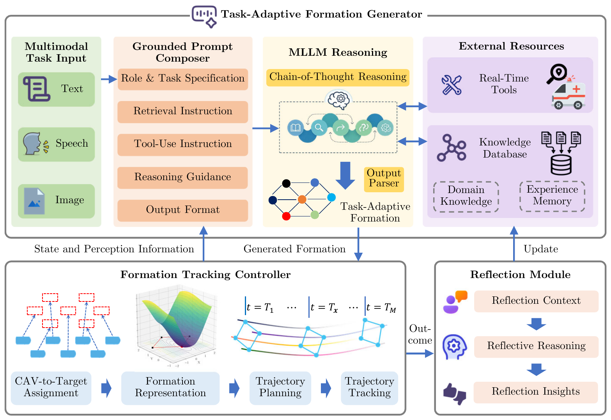

1.1 Decreasing Longitudinal Spacing
User Task Input
“Decrease the longitudinal spacing.”
Formation control of connected and automated vehicles (CAVs) has shown great potential for improving traffic efficiency and safety. However, existing studies predominantly focus on formation maintenance under predefined tasks and lack adaptability to dynamic task requirements in evolving traffic environments. To address this limitation, we propose MLA-TAFC, a Multimodal LLM-Augmented framework for Task-Adaptive Formation Control of CAVs. MLA-TAFC integrates a task-adaptive formation generator, a formation tracking controller, and a reflection module into a closed loop of generation, execution, and reflection. The generator leverages pretrained MLLMs to interpret unstructured multimodal task inputs in text, speech, and images and generate task-adaptive formations. Real-time tools and a knowledge database ground MLLM reasoning to mitigate hallucinations. The tracking controller realizes generated formations through conflict-free CAV-to-target assignment and joint spatio-temporal trajectory planning, enabling interpretable and safe execution through optimization-based methods. The reflection module reasons over task context and actual execution outcomes to update the knowledge database for iterative refinement of formation generation. Real-world experiments demonstrate the effectiveness and practical applicability of MLA-TAFC, with experimental videos available on the project website.
